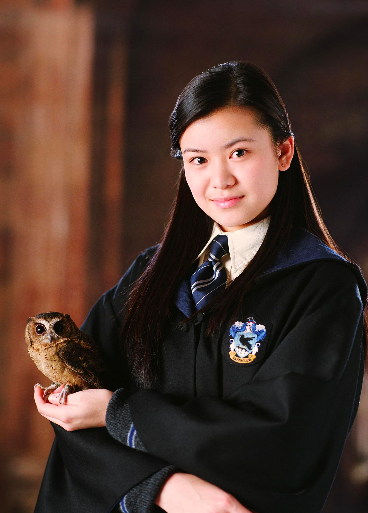
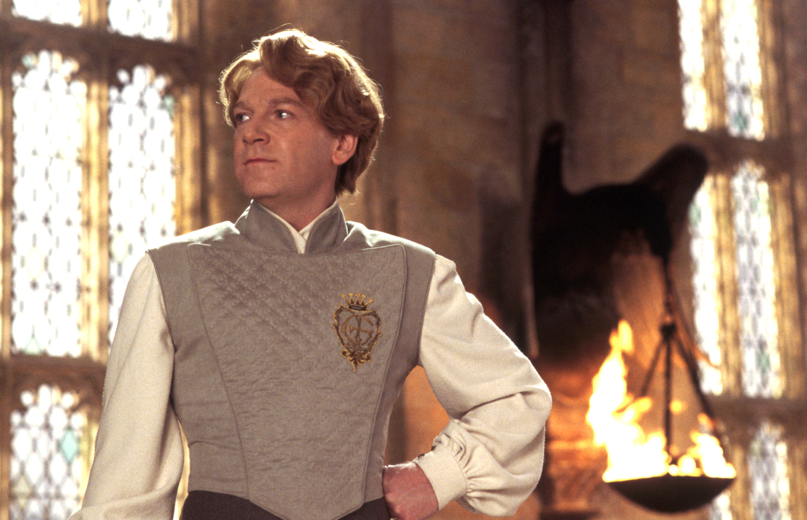
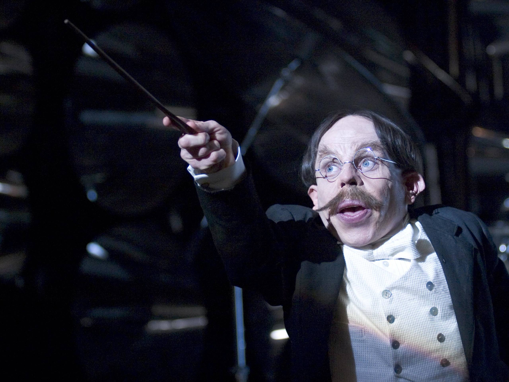

Lema da Casa
Quem sabe será a velha e sábia Corvinal A Casa dos que tem a mente sempre alerta Onde os homens de grande espírito e saber Sempre encontraram companheiros seus iguais.
Descrição da Casa
A Corvinal é conhecida por sua dedicação ao aprendizado, à criatividade e à sabedoria. Os membros desta casa valorizam a inteligência, a originalidade e a curiosidade, buscando sempre expandir seus horizontes e explorar o mundo ao seu redor. Na Corvinal, você encontrará um ambiente estimulante e intelectualmente desafiador, onde a busca pelo conhecimento é uma jornada constante.
Informações Extras
Os membros da Corvinal são conhecidos por sua sede insaciável de conhecimento e sua busca pela verdade. Eles valorizam a inteligência, a criatividade e a originalidade, e muitas vezes se destacam em áreas como adivinhação, poções e estudos mágicos. A Casa Corvinal também tem uma forte tradição de respeito pelas artes e pela cultura, e os corvinos são frequentemente encontrados nos corredores da biblioteca de Hogwarts, explorando livros e pergaminhos antigos.
Fundador: Rowena Ravenclaw (Corvinal)

Rowena Ravenclaw, a fundadora da Casa Corvinal, era uma bruxa notavelmente inteligente e criativa. Ela valorizava a sabedoria, a inteligência e a originalidade acima de tudo. Ravenclaw acreditava que o conhecimento era o maior poder de um bruxo e selecionava seus alunos com base em sua perspicácia e sede de aprendizado. Sua casa era conhecida por produzir alguns dos bruxos mais talentosos e inventivos, e seus membros eram incentivados a buscar respostas para as perguntas mais difíceis.
Personagens Relevantes da Casa Corvinal
-
Luna Lovegood
Uma bruxa excêntrica e única, conhecida por sua imaginação fértil e seu olhar peculiar para o mundo. Luna é um verdadeiro representante das qualidades corvinas, mostrando criatividade e originalidade em tudo o que faz.
-

Cho Chang
Uma estudante dedicada de Hogwarts, conhecida por sua inteligência e habilidades no campo de quadribol. Cho é lembrada por sua determinação e paixão, representando com dignidade os valores da Corvinal.
-

Gilderoy Lockhart
Um autor famoso e bruxo habilidoso, conhecido por suas aventuras e pela sua habilidade em Defesa Contra as Artes das Trevas. Lockhart é um exemplo da criatividade corvina, embora, às vezes, sua confiança excessiva possa levá-lo a situações inusitadas.
-

Filius Flitwick
O professor de Feitiços de Hogwarts e diretor da Casa Corvinal. Flitwick é um bruxo experiente e respeitado, conhecido por sua habilidade excepcional em feitiços e encantamentos. Ele é um exemplo brilhante das qualidades da Corvinal, combinando sabedoria e habilidade mágica de forma magistral.